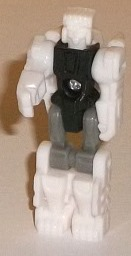
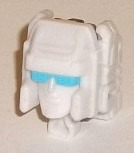
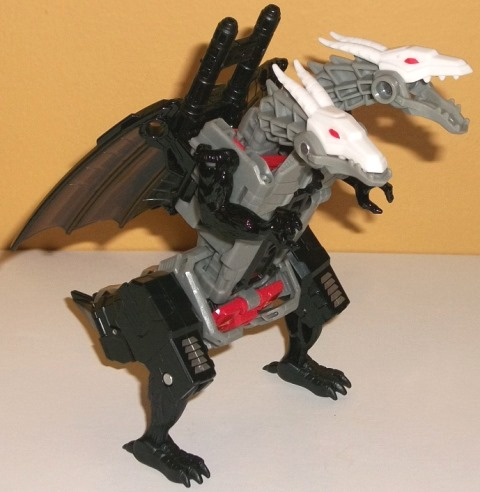
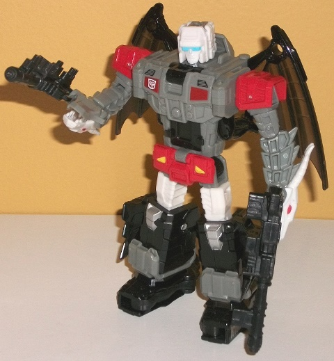

Allegiances
: Autobot
Size
: Deluxe
Difficulty of Transformation
: Medium
Color Scheme
: Gray, black, translucent
black, and some white, red, yellow, dark dull metallic red, and light pastel
blue
Rating
: 8.1


Daburu, Twinferno's
Titan Master, is a nice change from your usual "little robot guy"-- he's
based off of a Battle Beast named White Lion (Battle Beasts were a line
of little humanoid beast toys)! That's a pretty obscure and awesome reference,
there. His hands are molded to have large claw details on them, his feet
have little paws, and his headsculpt is VERY well done, with a cropped
mane (to make his head fit within the standard proportions of a Titan Master
head), a lion's face, and a monocle, because monocles are awesome. His
chest is also molded with a square near the top-- an homage to the elemental
"rub symbols" on Battle Beasts' chests. Unfortunately, all of this great
detailing isn't highlighted at all-- he's mostly white as you would expect,
with some black on the chest and gray on the upper legs. It's a fairly
bland color scheme, but not that bad-- IF there had been paint apps on
him. But there's not (an absolute crime for that magnificent headsculpt,
in particular). So all of these little details on the white plastic are
rather hard to see. For articulation, Daburu an move at the head, shoulders,
hips, and knees, (with the latter two moving as one for both legs, given
that they're pinned or molded together). In head mode, the other colors
mostly hide away so Daburu can form Twinferno's mostly-white head. It's
a fairly square facesculpt, so the little hands and feet behind the face
don't really stick out as much as they do with Titans Return toys that
have rounder faces. The sculpting is okay, though not really all that unique
for a G1 Autobot-- he's got a sloped helmet with two little side bits poking
out on the sides of his normal face, and an optic visor painted a light
pastel blue (the only paint on Daburu). The blue is a pretty nice color
and complements the white pretty well, but again, more paint was needed--
such as some silver for the face or something. The sculpting also just
seems SLIGHTLY off-- not a huge detail, but the visor looks slightly uneven
for some reason-- same with the forehead.


"Twinferno" is the new
copyright-friendly name for Doublecross, one of the G1 "Monsterbots", who
became monsters that could shoot sparks out of their mouths. Unfortunately,
times have changed, so no sparks can fly out of this toy's mouths. Twinferno
is a GREAT new name for the character, though-- one of the few copyright
changes that actually makes the name better, in my opinion. Anyways, Twinferno
is a double-headed dragon with oddly furry and organic-looking arms and
lower legs, just like the G1 toy. Overall, this mode is... not as strong
as that toy's. The reason for this is because of two significant proportional
maladies. The first is that the body is oddly long and skinny-- it needs
to be bulkier, especially around the stomach area. The tail is also pitifully
short on the back end-- it's very clearly mostly just his legs with little
tail-tip halves folded in together on the end. The hip "shells" around
the robot codpiece also look a little weird, but comparatively it's not
that big of a deal. The actual legs and arms are pretty cool with a lot
of excellent "fur-like" detailing with very realistic-looking claws. They
don't really fit in with the robotic nature of the rest of the toy, but
again, that was the case on the G1 toy as well. The mold detailing is fairly
sparse on most of the rest of the toy, with just some basic boxy robotic
angular details here and there. The ridged detailing on the necks and horns
looks pretty nice, and the back scales detailing is fairly intricate, as
well. There's a sawblade-like black detail coming out of the chest that
is meant to emulate the "spark-spitting" effect on the G1 toy, but sadly
this is part of the chest and can't move at all. (Hasbro, you tease!) I
do think the legs could stand to be a bit bigger/bulkier, but again compared
to the two biggest proportional issues it's not that big of a deal. Twinferno
also has very robotic-looking bat-like wings and two dragon heads with
two horns on each; these are all remarkably solid, though I wish the heads
could move forward a bit more at the neck without clashing into that chest
panel (which sticks up a little above the actual chest). As far as the
color scheme, it's mostly a moderate gray (thankfully not the blah light
milky gray that's on far too many TFs), along with black and just a bit
of red and white. A fairly basic color scheme, but the contrast between
the white, black, and gray works alright, even if it's too monochrome;
I wish more red was visible on the toy, certainly, or even some more white.
As it is, the red is only visible in this mode on the robot codpiece (along
with bits of yellow on said piece-- together it makes his codpiece look
like a sad robot face, which is... slightly disturbing), on the dragon
eyes, and on small parts of the back that become the shoulders in robot
mode. There's also a bit of silver on the tail (which become the robot
kneecaps), along with vent-like details on the dragon knees. The dragon
stomach and chest could've used more paint, in particular. The wings are
oddly transparent black-- given that they're supposed to be robo-scaly
wings, it seems weird to make those parts translucent. There's also some
translucent black used for the cockpit, which is situated inside Twinferno's
stomach-- almost certainly the reason Twinferno's body is so oddly long
in this mode. For articulation in this mode, Twinferno can move at the
jaw of each head, at two points on each neck, at the base of each wing,
and at the elbows, hips (at two points), knees, and forwards a bit at the
ankles. There's also two black guns that Twinferno comes with that plug
into his back or the holes in his wings and can combine together to let
a Titan Master sit on top of them. There's also two pegs on his upper back
for a Titan Master to stand on and "ride" him, if you so choose.
Twinferno's transformation
is very unique-- the chest basically folds down and the shoulders split
and fold onto the sides of the main body, with the dragon heads forming
the arms. Most interestingly, the dragon legs actually fold down as the
back end splits so that the entire dragon legs (with the feet folded up)
become the robot feet. In robot mode Twinferno is definitely a very unique
Transformer, and (mostly) in a good way. I love the dragon head-hands--
it is a detail brought over from the G1 toy, but regardless I just think
it looks good. The dragon arms are now folded up and "trapped" against
the sides of the body, so are mostly a non-factor here, but they do create
a bit of a "bulking out" of the sides between the relatively slim abs and
the wider chest, and I quite like this little detail. The chest itself
is new, as it's been folded down over part of the dragon chest, with G1-like
details including some circular details for "pecs" and dark dull metallic
red paint on two little bits (oddly, this is the only part of the toy where
this shade of the color is used). The legs are the weak part of this mode.
The UPPER legs are okay, with some nice ridged detail, but the lower legs
have the tail halves unceremoniously hanging off the sides, and although
the idea of having the dragon hips become the robot feet is intriguing,
the feet are a bit too large and slightly "off", and they do have the dragon
feet hanging off the back ends, which all looks pretty weird from, say,
a side view. As far as color breakup, the red and white are a bit more
prominent here, with the gray more broken up, so in that respect this mode
is definitely superior. As far as articulation, Twinferno can move at the
neck, base of the wings, shoulders (at three points), elbows, at the dragon
jaws/wrists/whatever you want to call them, and at the hips (at three points),
knees, and rotation at the ankles. Thus he's fairly articulated, though
because of the structure of the lower legs that can limit movement there
a bit.
Titans Return Twinferno
is definitely one of the most unique toys of the line, and it's nice to
see an updated Monsterbot. I love the double dragon heads, as well as the
general look and proportions of the robot mode and the transformation.
Daburu is also a nice Battle Beast nod and basically the most unique Titan
Master mold in the line. However, the beast mode has some odd proportions,
with the body being too long and skinny and the tail being really short,
along with somewhat under-sized legs. If you want more diversity from TFs
beyond the usual cars/jets/tanks and the like, or like monsters, this is
a mild recommendation, but just keep in mind his beast mode proportions
definitely look a bit odd-- if just that big downside had been changed,
this would have been one my favorite deluxes from the line.
Reviews by Beastbot